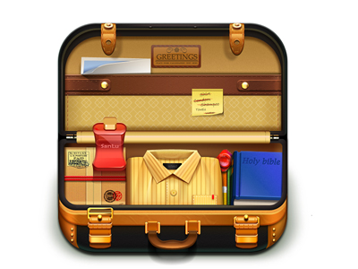
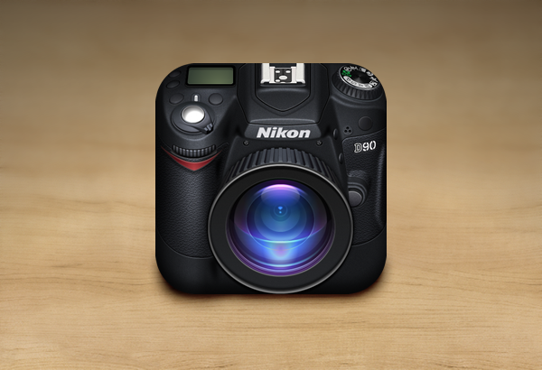

1. Introducción
En esta última práctica vamos a repasar varios conceptos que ya hemos visto a lo largo del curso. Quiero que os déis cuenta que realmente habéis aprendido mucho a lo largo de las sesiones que hemos ido realizando. Hemos superado ya el manejo del ratón, los conceptos como el copiar/pegar, o la descarga de documentos al disco duro, hagamos un repaso de todos ellos.
2. Búsqueda por la web
- Busca información de Las agujas de Santa Águeda. ¿Dónde están localizadas?
- Visita esta ṕagina, está en inglés: http://www.chinahighlights.com/guilin/attraction/longji-terraced-field.htm. ¿De qué tema nos está hablando? Utiliza el traductor para averiguarlo.

3. Descarga de documentos al disco duro.
Ahora que ya hemos visitado algunas páginas webs de 2 ubicaciones diferentes, vamos a buscar fotos de estas dos ubicaciones, y las descargaremos al disco duro. Utiliza el buscador de imágenes de Google para encontrarlas
4. Envío de correo electrónico
Envíame un correo electrónico con las fotos y la información que has encontrado (utiliza la técnica de copiar/pegar).
¡Ya hemos terminado! ¿Fácil no?